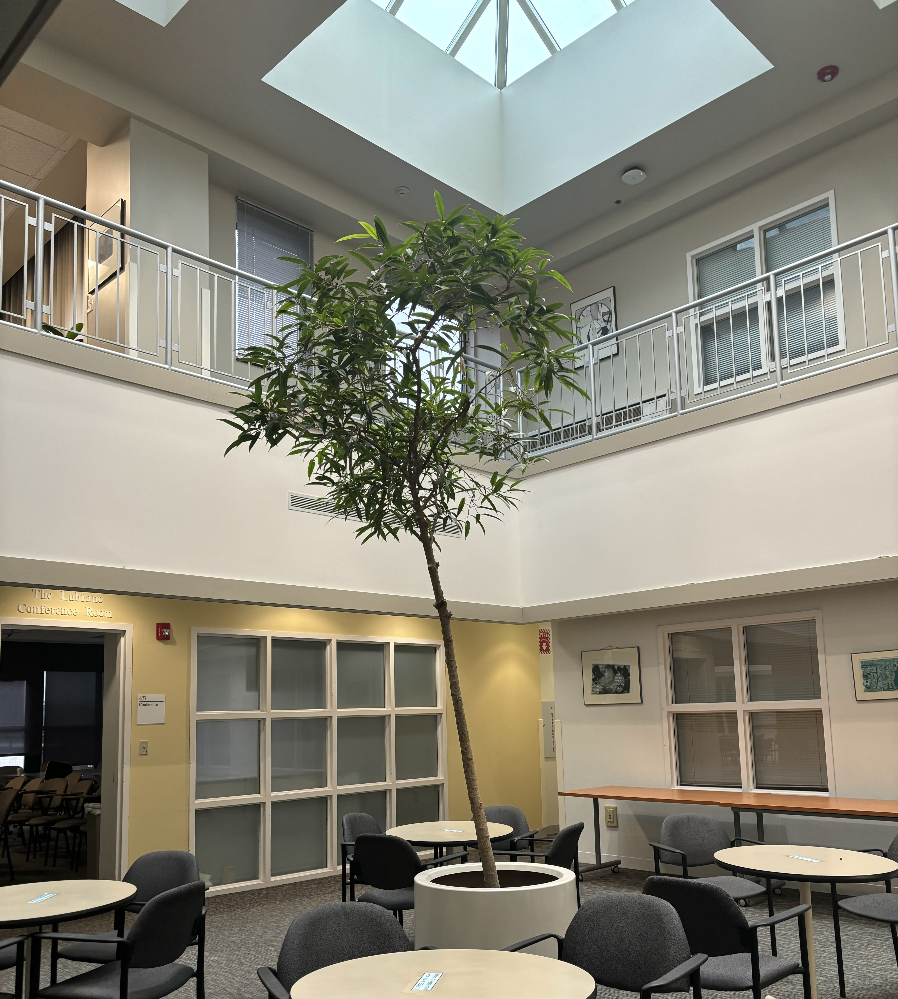
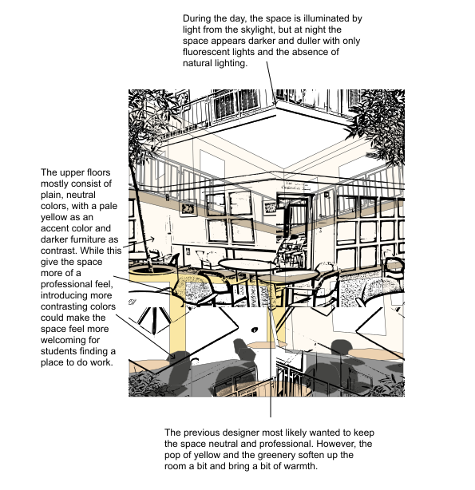
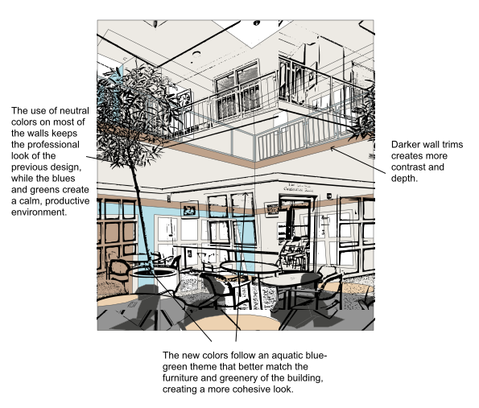
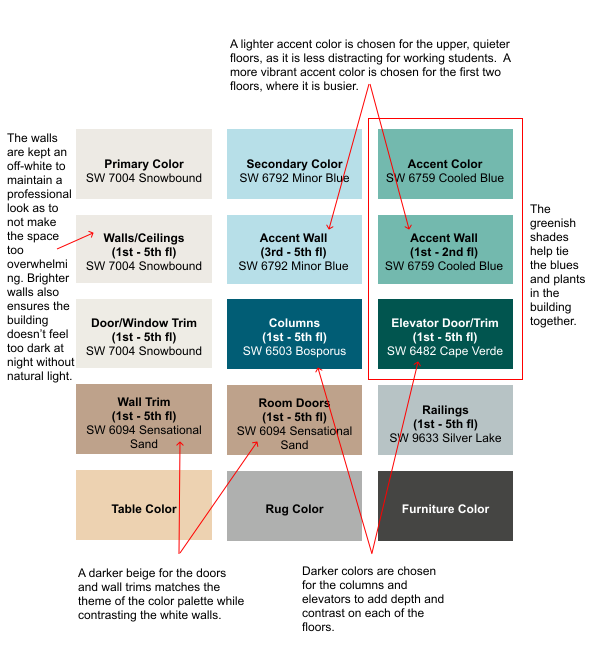

How do we make institutional spaces feel more human? As a CS PhD student at Brown University, I spend a great deal of time in the Watson Center for Information Technology (CIT) building. For this project, I explored how thoughtful color design can transform both my and other students' experiences in this space.
I began by sketching a current area of the CIT, the 4th floor atrium, observing what the sapce looks and feel like at different times of day and noting how lighting and usage varied across floors. I also took note of what emotions and vibes the current use of colors evoke.
After asking around among my fellow peers that frequent the CIT, the general consensus was that the upper floors, used primarily for quiet work, called for softer, cooler tones. The more social and active lower floors could handle bolder accents. I chose an aquatic blue-green theme to complement the existing greenery and add harmony between natural and built elements. Here, we can use the same sketch of the 4th floor atrium with our new color choices.
The original CIT design leaned heavily on pale yellows and beige tones, with dark furniture providing contrast. While clean and formal, this look lacked visual energy and did little to support student comfort, especially in the absence of natural light at night. Here is the final color strategy and palette that feels more inviting and mentally refreshing while maintaining a sense of seriousness appropriate for a tech-focused space.
This project taught me that visual design doesn't just live on screens. It also lives in the spaces we frequent in our daily lives! Color plays a crucial role in how people feel and function in their environments. By aligning tones with how a space is used and how it's lit throughout the day, design can subtly shape behavior and well-being. This experience deepened my curiosity about environmental interaction and expanded my visual design thinking beyond the digital world.